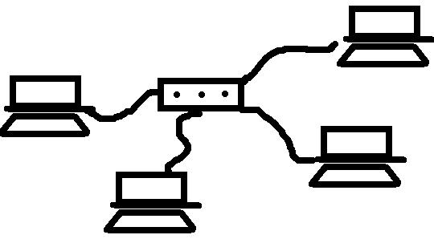
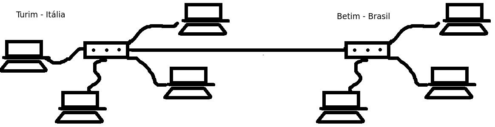

- São as chamadas redes locais. Interligam computadores em um espaço geograficamene restrito. Geralmente são privadas e permitem altas taxas de transmissão de dados. 
- São as chamadas redes metropolitanas. Abrangem uma região maior que a LAN e possibilitam a interligação com computadores em uma região metropolitana.

- São redes de longa distância que interligam computadores em um espaço geograficamente disperso, como por exemplo países. 